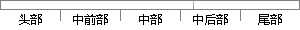

responseText !
片段位置图

相似结果|
相似片段 1：>
相似片段 2：其中，onreadystatechange回调只要在readyState值发生改变时都会被激活。·responseText属性这个responseText属性包含客户端接收到的HrrP响应的文本内容
相似片段 3：！");$('#password').focus();return true;},success: function(responseText, statusText
相似片段 4：。其中，onreadystatechange属性接收一个EventListener值，向该方法指示无论readyState值何时发生改变，该对象都将激活。3)responseText属性
相似片段 5：也更可靠如需获得来自服务器的响应，请使用 XMLHttpRequest 对象的 responseText 或 responseXML 属性。responseText 属性如果来自服务器的响应并非
相似片段 6：，onreadystatechange属性接收一个EventListener值，向该方法指示无论readyState值何时发生改变，该对象都将激活。(2)responseText属性这个responseText属性包含客户端接
相似片段 7：!=4){alert(”验证码必须是4位数字!”)；}AjaxCallback=-funetion(responseText){if(responseText!=”err”&&responseText!=?’)／／成功!
相似片段 8：”)；xmlhnp．send(null)：，，发送数据，开始和服务器端进行交互val"responseText=xmlh印．responseText；，，获取服务器段输出的纯文本数据
相似片段 9： geometry = null;//从 xmldoc中读取的参数String width = null;String responseText=new String();//响应文本ResultSet rs
相似片段 10：(responseText)(alert(responseText)',／／错误提示信息1 一<／script>以下为最近设施查询的示范代码：
|
※ 片段修改建议 ※
近似词参考：